VMs¶
VM Info¶
From the Web-UI¶
The experiment must be started; click on the experiment name to enter the Running Experiment component. Within that component, click on the VM name and you will be presented with a VM information modal.
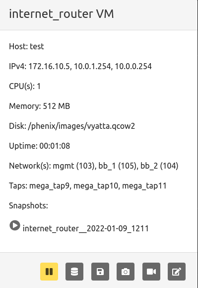
Available commands
restorea snapshot by clicking the play button next to the desired snapshot name.
Buttons from left to right:
pausea running VM- Create a
memory snapshotof a running VM - Create a
backing imageof a running VM - Create a
snapshotof a running VM record screenshotof a running VMmodify stateopens another toolbar of buttons
Modify State Toolbar¶
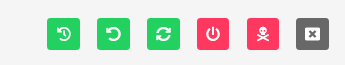
Buttons from left to right:
redeploya running VMreset disk stateof a running VMrestarta running VMshutdowna running VMkilla running VMclosemodify state toolbar
From the Command Line Binary¶
There are two options for displaying the information for VMs in an experiment. First run the following command to see information for all VMs in a given experiment.
Or, run the following to see the information for a specific VM in an experiment.
Create a Backing Image¶
From the Web-UI¶
Click on the name of a running VM in a started experiment to access the VM information
modal. Click the create backing image button as shown in the screenshot below.
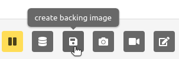
From the Command Line Binary¶
Not applicable.
Create a Memory Snapshot¶
From the Web-UI¶
Click on the name of a running VM in a started experiment to access the VM information
modal. Click the memory snapshot button as shown in the screenshot below.
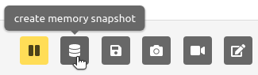
From the Command Line Binary¶
To create an ELF memory dump, run the following command.
Create a VM Snapshot¶
From the Web-UI¶
Click on a running VM in a started experiment to access the VM information
modal. Click the vm snapshot button as shown in the screenshot below.
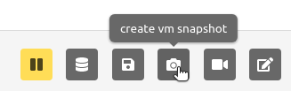
From the Command Line Binary¶
Not applicable.
VM VNC Access¶
From the Web-UI¶
The experiment must be started; click on the VM screenshot to open a new browser tab that provides VNC access to the VM.
From the Command Line Binary¶
Not applicable.
Packet Capture¶
From the Web-UI¶
Click on the name of the network tap on a running VM in a started experiment to start a packet capture. The name of the network tap will turn green once a packet capture has started. It is possible to start captures on multiple network taps. However, when you stop packet capture, it will stop captures on all network taps.
From the Command Line Binary¶
To start a packet capture, run the following command.
To stop all packet captures on a running VM, use the following command.
Kill a VM¶
From the Web-UI¶
Click on the name of a running VM in a started experiment to access the VM information
modal. Click the modify state button on the far right to open the modify state toolbar.
Click the kill button as shown in the screenshot below.
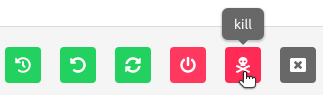
Note: if you stop and then start the experiment again, that VM will run again per the experiment configuration.
From the Command Line Binary¶
To kill a VM, run the following command.
Modify the Network Connectivity¶
From the Web-UI¶
Click on the network for the desired VM in the Running Component to modify the settings. Select from a pull down what network you want to switch the VM interface you clicked on to. To revert back to previous setting, simply repeat selecting the network interface you wish to change, and select the previous network setting.
From the Command Line Binary¶
To connect a VM network interface to a different network, run the following command.
To disconnect a VM network interface, run the following command.
Pause a VM¶
From the Web-UI¶
Click on the name of a running VM in a started experiment to access the VM information
modal. To pause a VM, click on the pause button as shown in the screenshot below.
To start a paused VM, that same button will become a green play button; simply
click it to start.
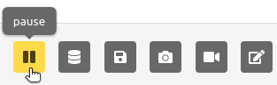
From the Command Line Binary¶
To pause a VM, run the following command.
To resume a paused VM, run the following command.
Redeploy a VM¶
From the Web-UI¶
Click on the name of a running VM in a started experiment to access the VM information
modal. Click the modify state button on the far right to open the modify state toolbar.
Click the redeploy button as shown in the screenshot below.
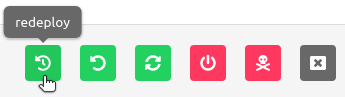
From the Command Line Binary¶
To redploy a VM, run the following command.
Reset Disk State¶
From the Web-UI¶
Click on the name of a running VM in a started experiment to access the VM information
modal. Click the modify state button on the far right to open the modify state toolbar.
Click the reset disk state button as shown in the screenshot below.
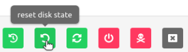
From the Command Line Binary¶
To reset the first disk to the initial pre-boot state, run the following command.
Restart a VM¶
From the Web-UI¶
Click on the name of a running VM in a started experiment to access the VM information
modal. Click the modify state button on the far right to open the modify state toolbar.
Click the restart button as shown in the screenshot below.
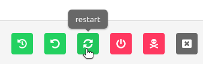
From the Command Line Binary¶
To restart a VM, run the following command.
Resume a VM¶
From the Web-UI¶
Click on the name of the paused VM in a started experiment to access the VM information modal. Click the green play button (previously the pause button, furthest button to the left).
From the Command Line Binary¶
To resume a paused VM, run the following command.
Shutdown a VM¶
From the Web-UI¶
Click on the name of a running VM in a started experiment to access the VM information
modal. Click the modify state button on the far right to open the modify state toolbar.
Click the shutdown button as shown in the screenshot below.
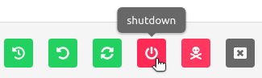
From the Command Line Binary¶
To shutdown a VM, run the following command.
Modify VM Settings¶
From the Web-UI¶
There are two ways to modify VM settings:
- Click on a stopped experiment to access the Stopped Component. You are able to edit the
following:
- Host name
- CPUs
- Memory
- Disk
- Do not boot flag
- From a running experiment, click on the VM name and then the redeploy button (yellow
power button, second from the right on the modal footer). You are able to edit the following:
- CPU
- Memory
- Disk
- Replication of original injections
From the Command Line Binary¶
This command is not yet implemented. For now, you can edit the stopped experiment directly with the following command.
This will launch the system editor where you can directly modify the experiment settings.
Applying Actions to Multiple VMs¶
Note
See VM Multi Action for documentation on applying actions to multiple VMs at once.